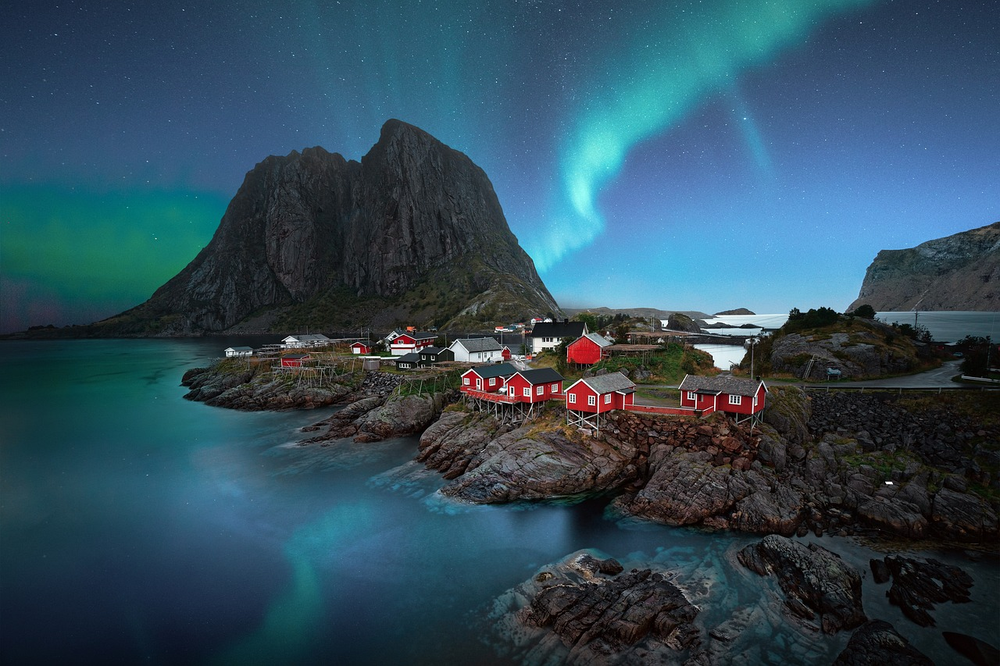
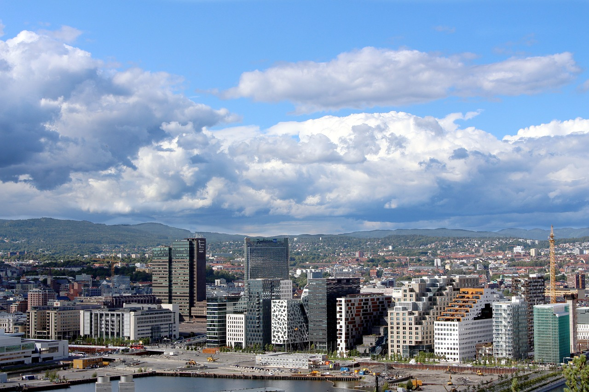
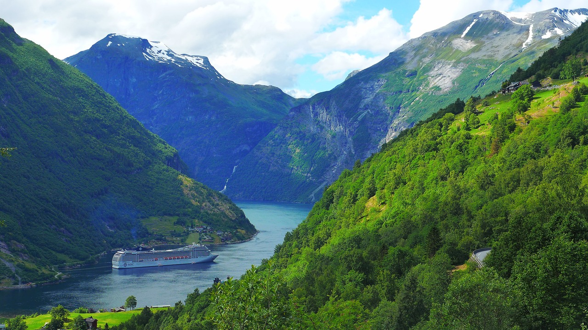

A continuación te enseñaremos una lista de puntos de interés a los que sin duda tienes que acudir en caso de que viajes a Noruega o a tener en cuenta si te quieres ir a vivir a este país:
Lofoten y Nordland
Si quieres disfrutar de los fiordos y sobre todo de las auroras boreales no tines muchas opnciones mejores, eso por no hablar de las más que curiosas aldeas de pescadores que se encuentran en el archipiélago de Vesterålen. Si lo que te gusta es rutear con el coche tienes a tu disposición la que es considerada una de las carreteras más bonitas del mundo: la Kystriksveien, entre Trøndelag y Bodø. Por el contrario si lo que te gusta son las aventuras más a pie como hacer senderismo entonces Narvik es tu lugar.
Oslo
Oslo, ¿acaso hacen falta presentaciones? Capital de Noruega, centro urbano, la gran ciudad. Miles de trabajadores, ancianos, niños y estudiantes es lo que encontrarás en Oslo con el mayor numero de tiendas, centros comerciales y lugares de ocio de toda Noruega pese que este ultimo no sea el mayor fuerte del país dada la naturaleza cerrada e introvertida de los noruegos. Si quieres presenciar en todo su esplandor el país más avanzado de toda Europa no puedes ir a otro lugar que no sea Oslo, su visita es obligatoria.
Fiordo de Geiranger
Faceilmente uno de los fiordos más bonitos del mundo. Considerado patrimonio de la humanidad, el Fiordo de Geiranger brilla por sus azules aguas (en verano, eso sí) y sus fascinantes cascadas como la Cascada de las siete hermanas. Puedes visitarlo tanto como un turista común y apreciarlo desde la distancia con las rutas hechas para recorrerlo a pie o si te van más las emociones fuertes puedes optar por hacer una aventura de alpinismo.
Bergen
Esta lista de lugares que visitar en Noruega no está en ningún orden específico, aunque para el final si que hemos dejado el que para nosotros es el mejor sitio al que puedes ir en este hermoso país: Bergen, la segunda ciudad más grande de Noruega y probablemente la más bonita. Una increible ciudad costera donde está totalmente presente la actividad pesquera y que te dejará enamorado de sus pequeñas y coloridas casas a pie de agua con sus ya míticos tejados a dos aguas ideales para afrontar el difícil temporal norteño.

De esta forma terminaríamos con el listado de puntos de interés en "el mejor país de Europa". Como habeis podido apreciar es una lista pequeña pero por supuesto no podíamos dejar de recomendaros ir a sitios como Kristiansand, al sur de Noruega, la ciudad más calida y soleada del país la cual te regalará una tranquila estancia al lado de sus calmadas playas o divertirte en el zoo o en el parque de atracciones; y por supuesto Stavanger, la ciudad estrella (Michelin precisamente) en cuanto a gastronomía se refiere, tu estomago quedará totalmente satisfecho aunque no podemos asegurar lo mismo de tu bolsillo.
¡Si quieres consultar más información sobre Noruega te adjuntamos en nuestro cuadro de navegación unos links con más entradas!